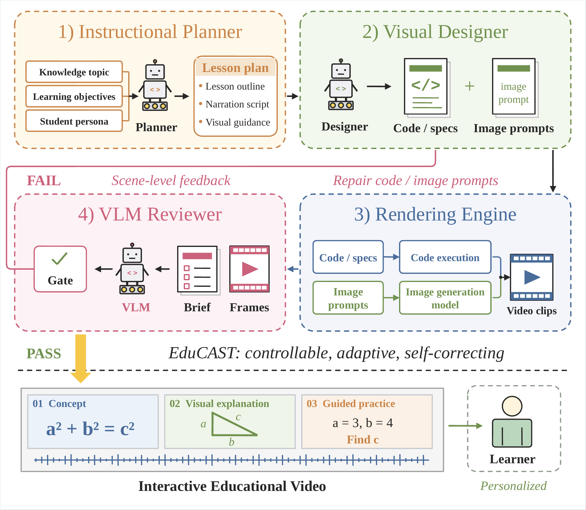

Personalized educational video generation
EduCAST
A Multi-Agent System for Personalized Educational Video Generation with Closed-Loop Review
Arizona State University
* Equal contribution
See EduCAST in action
From a learning goal to a narrated lesson with interactive practice.
Abstract
Personalized instructional videos are costly to produce because lesson planning, visual design, narration, rendering, and quality control must be coordinated for each learner. We present EduCAST, an open-source demonstration system that turns a topic, learner profile, and learning objective into an inspectable educational lesson. A multi-agent pipeline creates a learner-conditioned plan, converts segments into animation code or structured specifications, renders narrated media, and uses VLM review to trigger localized repairs. The interface exposes segment plans, media previews, and review feedback, while a browser player combines video, illustrations, and interactive practice. A pilot comparison examines output quality and the overhead of the reviewer loop.
From learning goals to interactive lessons
Plan, visualize, render, and review—with localized repair when a scene needs another pass.
